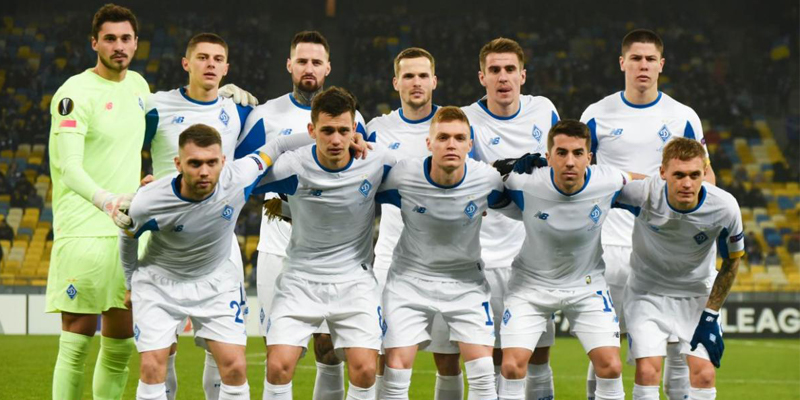
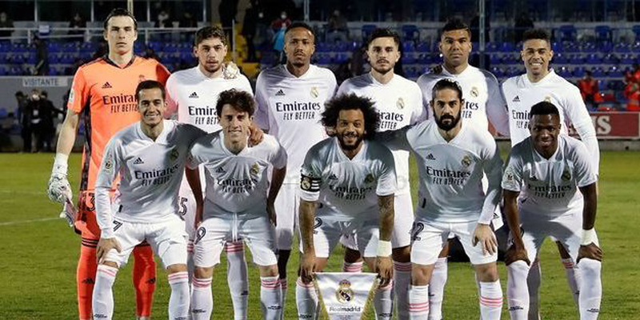
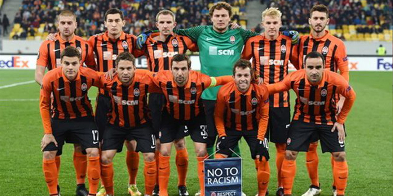
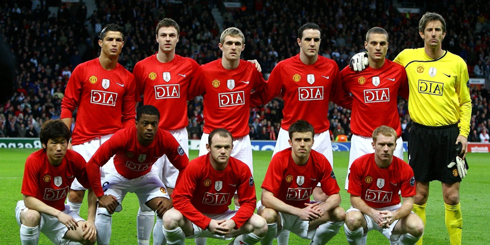
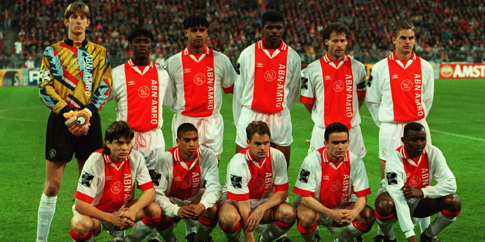

«Дина́мо» — український футбольний клуб з міста Києва, що бере участь в українській Прем'єр-лізі. «Динамо» засновано 1927 року, це найстарший та найпопулярніший на сьогодні професійний клуб міста. Єдиний клуб, який провів усі сезони у найвищій лізі СРСР, а потім України. Вікіпедія
Тренер: Мірча Луческу
Засновано: 13 травня 1927
Коротка назва: «Динамо», ДК
Повна назва: Футбольний клуб «Динамо» Київ
Арени/стадіони: Стадіон «Динамо» ім. Валерія Лобановського, БІЛЬШЕ
Ліги: Чемпіонат України з футболу: Прем'єр-ліга, Ліга чемпіонів УЄФА, Кубок України з футболу

«Реа́л Мадри́д» — іспанський футбольний клуб із Мадрида, заснований 6 березня 1902 року. Один із найвідоміших і найсильніших клубів Іспанії та світу. Найкращий футбольний клуб XX століття за версією ФІФА. Вікіпедія
Арена/стадіон: Сантьяго Бернабеу
Тренер: Карло Анчелотті
Ліги: Ліга чемпіонів УЄФА, Ла-Ліга, Кубок Іспанії з футболу, Клубний чемпіонат світу з футболу
Капітан: Карім Бензема
Засновники: Адольфо Мелендес, Хуан Падрос, Карлос Падрос, Хуліан Паласіос
Засновано: 6 березня 1902 р.

«Шахта́р» – український футбольний клуб з міста Донецька. Виступає у Прем'єр-лізі чемпіонату України. Створений у травні 1936 року. Володар Кубка УЄФА 2009. 4-разовий володар Кубка СРСР. 13-разовий чемпіон України, 13-разовий володар кубка України, 9-разовий володар Суперкубка України. Вікіпедія
Тренер: Ігор Йовічевіч
Арена/стадіон: Національний спортивний комплекс «Олімпійський»
Ліги: Ліга чемпіонів УЄФА, Чемпіонат України з футболу: Прем'єр-ліга, Ліга Європи УЄФА, Кубок України з футболу
Місцезнаходження: Донецьк
Генеральний директор: Сергій Палкін (18 черв. 2004 р.–)
Засновано: 24 травня 1936 р., Донецьк

«Манче́стер Юна́йтед» — англійський футбольний клуб з осідком в Олд-Траффорд, районі метрополійного Манчестера. Заснований під назвою «Ньютон-Гіт» у 1878 році, клуб змінив свою назву на «Манчестер Юнайтед» 1902 року. Вікіпедія
Тренер: Ерік тен Гаґ
Арена/стадіон: Олд Траффорд
Талісман: Fred the Red
Ліги: Прем'єр-ліга, Кубок Англії з футболу, Ліга Європи УЄФА, Кубок Футбольної ліги
Капітани: Гаррі Магвайр, Бруну Фернандеш
Голови: Джоел Глейзер, Аврам Глейзер

«Ая́кс» — професіональний нідерландський футбольний клуб з Амстердаму. Його заснували 18 березня 1900 року друзі на ім'я Ган Даде, Карел Ресер та Флорис Стемпел. Вікіпедія
Арена/стадіон: Амстердам-Арена
Власник: AFC Ajax N.V.
Капітан: Душан Тадич
Головний тренер: Альфред Схредер
Засновано: 18 березня 1900
Ліги: Ліга чемпіонів УЄФА, Ередивізі, Ліга Європи УЄФА, Кубок Нідерландів з футболу